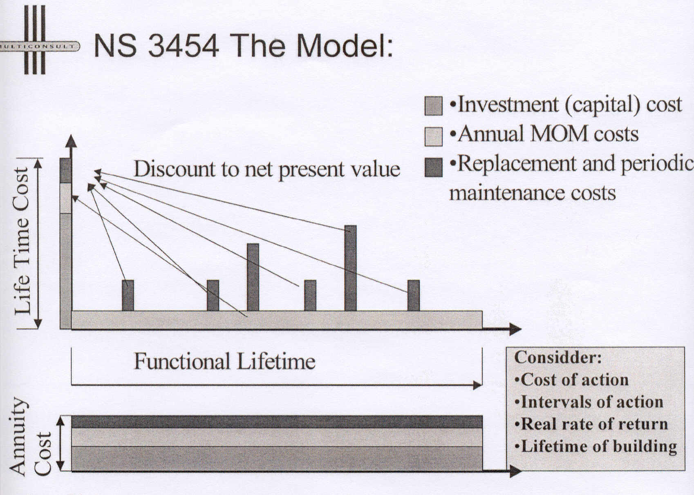
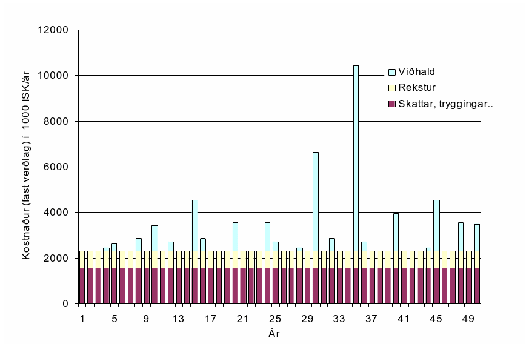

Háskóli Íslands – byggingarverkfræðiskor Húsagerð
Björn Marteinsson
9. 9 Umhverfisvænar byggingar, vistferilsgreining og kostnaður
Hugtökin umhverfisvænar (t.d. e: green buildings) og sjálfbærar (e:sustainable buildings) byggingar heyrast æ oftar. Þessum hugtökum tengjast einnig vistferilsgreining (e. Life Cycle Assessment, LCA) og heildarkostnaður (e: Life Cycle Cost, LCC) og er ástæða til að fjalla um öll hugtökin.
LIFETIME engineering:
Á alþjóðlegum vettvangi er farið að tala um hugtakið “Lifetime Engineering” og er þá átt við hvers framtíðin mun vænta af byggingariðnaðinum. Í ES verkefninu “Thematic network LIFETIME” (EU-Growth Research Programme; Thematic Network: LIFETIME: ”Lifetime Engineering of Building and Civil Infrastructures”) er að finna eftirfarandi skilgreiningu:
Lifetime Engineering is an innovative idea and a concretisation of this idea for solving the dilemma that currently exists between infrastructures as a very long-term product and a short-term approach to design, management and maintenance planning.
Lifetime engineering includes:
Lifetime investment planning and decision- making
Integrated lifetime design
Integrated lifetime construction
Integrated lifetime management and maintenance planning
Modernisation, reuse, recycling and disposal
Integrated lifetime environmental impact assessment and minimisation
(…)
Integrated lifetime management and maintenance planning includes continuous condition assessment, predictive modelling of performance, durability and reliability of the facility, maintenance and repair planning and the decision-making procedure regarding alternative maintenance and repair actions.
Tilgangurinn er sá að strax í upphafi megi skoða, og bera saman, valkosti til að meta hvaða kvaðir ný mannvirki setja framtíðinni og þannig megi velja besta kostinn.
Kostnaðaráætlanir og heildarkostnaður
Það hefur lengi tíðkast að gera kostnaðaráætlanir fyrir nýbyggingar. Slíkar áætlanir eru ýmist byggðar á verðskrám fagfélaga (“uppmælingartöxtum”) eða á markaðsupplýsingum.
Verðskrár fagfélaga:
Fagfélög hafa uppmælingar til að byggja verðskrár á, slíkir verðskrár eru t.d. notaðir við verðlagningu ákvæðisvinnu. Skrárnar byggja á gildandi tímagjaldi viðkomandi stéttar og ýtarlegri sundurliðun. Aðferðin er krefst góðrar þekkingar á verðskránum, sundurliðun verkþáttar verður að vera fyrir hendi og aðferðin jafnframt tímafrek í notkun. Verð sem þannig fást endurspegla ekki endilega markaðsverð þar sem tímabundnar sveiflur í eftirspurn (yfirborganir) sjást ekki í töxtunum.
Verðbankar:
Flestir hönnuðir hafa verðupplýsingar úr verkum sem hafa verið unnin og þeir tengjast, nokkrir aðilar selja aðgang að slíkum upplýsingum. Slíkar upplýsingar eru (staðbundin) markaðsverð á hverjum tíma og gefa því glögga mynd af áætluðum verkkostnaði. Í þessum tilvikum er iðulega um að ræða t.d. fermetraverð í frágegnum byggingarhlutum og magntaka öll verður vel viðráðanleg. Þessi aðferð er sérlega aðgengileg þegar gera á samanburð á milli aðferða á hönnunartíma og í gerð kostnaðaráætlana almennt.
Vaxandi er áhugi fjárfesta á að meta fyrirfram heildarkostnað vegna mannvirkja; þ.e. byggingarkostnað, rekstur og viðhald í einhvern tiltekinn tíma. Slíkar áætlanir eru nauðsynlegar í t.d. PPP (e: public-private partnership) verkum eins og verður notað við t.d. nýtt tónlistarhús. Samanburður milli verka og/eða aðferða er oft gerður með því að núvirðisreikna verk og dreifa síðan kostnaðinum á áætlaðan endingartíma, sjá mynd 9. 1 og 9.2. Augljóslega er nauðsynlegt að hafa nokkuð góða mynd af áhrifum endingar, niðurbrots, viðhaldsþarfar og rekstrar til að geta fundið heildarkostnaðinn. Á mynd 9.3 er sýnd áætlun heildarkostnaðar (á föstu verðlagi) fyrir íslenskt fjölbýli.
{kind=link}
Mynd 9.1 Heildarkostnaður (heimild S. Bjørberg, Multiconsult)
{kind=link}
Mynd 9.2 Heildarkostnaður núvirðisreiknaður og dreift á árin (heimild S. Bjørberg, Multiconsult)
{kind=link}
Mynd 9.3 Viðhald og rekstarkostnaður fjölbýlis (Björn M, óbirt vinnugögn)
Umhverfisvæn efni og byggingar
Talað er um umhverfisvæn efni og byggingar, en ekki alltaf ljóst við hvað er átt. Þó virðist aðaláherslan iðulega liggja á hversu “óæskileg” áhrif efna eru á umhverfið s.s. orkuþörf (t.d. innifalin orka) eða efnagjöf og þá sérstaklega til innilofts. Loks vegur það þungt hversu góður aðgangur er að efnunum, í slíkum samanburði er jákvætt ef um er að ræða endurnýjanleg efni eða orku. Nokkur dæmi eru um byggingar hérlendis sem hannaðar hafa verið sem “umhverfisvænar” (t.d. bygging að Sólheimum, Grímsnesi - sjá http://www.solheimar.is/Solheimar/Umhverfismal/).
Innifalin orka (e: embodied energy)
Áherslan á innifalda orku hefur verið mjög mikil (sjá umfjöllun um LCA) og algengt að sjá efnum raðað í “gæðaflokka” útfrá slíkum upplýsingum einum saman.
Í hugtakinu innifalin orka felst;
Orka sem þarf til vinnslu hráefnis
Flutningar hráefnis til verksmiðju
Framleiðsla; *
Orka sem þarf fyrir framleiðsluferlið
Orka til tækja, lýsingar, upphitunar og flutninga í verksmiðju
Flutningar frá framleiðslustað til notkunarstaðar
* stundum er reiknað með orku og efnisþörf sem þurfti til að reisa verksmiðjuna…
Í töflu 9.1 eru sýnd samantekt yfir innifalda orku byggingarefna (Björn, 2002). Þegar nota á upplýsingar um innifalda orku efna þá skiptir vitaskuld miklu máli að tölurnar séu sundurgreindar eftir tegund orku (jarðvegseldsneyti, vatnsorka, jarðvarmi, kjarnorka..).
Tafla 9.1 Viðmiðunargildi fyrir innifalda orku algengra byggingarefna
Efni Innifalin orka (MJ/kg)
Fúguefni 50
Gips 5,1
Gler 15,9
Gjall – vikur 0,006
Grús – fylliefni og steypuefni 0,008
Íblöndunarefni fyrir steypu (þurrefnisinnihald 30%) 30
Leirvara – postulín 13
Lím 100
Malbik 3,4
Málmar (samtala, en langmest stál) 15
Plast - almennt (samtala, en mest frauðplast) 60
Plastmálning (þurrefnisinnihald 20%) 40
Sandur 0,003
Sement 6,1
Sparsl – sandsparsl 6,3
Steinull 11,3
Steypa 0,65
Timbur – grófsagað 2,5
Trjákennd efni (spónaplötur, MDF) 12
Framleiðsluorka vegna steypuframleiðslu hérlendis er metin sem 0,59 MJ/kg, sem er lágt í samanburði við erlend gildi sem liggja á bilinu 1,0 – 7,9 MJ/kg. Lágt gildi hér er mest vegna þess hve aðflutningsleiðir eru stuttar og fylliefnið er náttúruleg grús, en erlendar tölur benda til þess (Gillberg et al., 1999) að það sé fjórum sinnum orkufrekara að vinna malað fylliefni heldur en grús.
Upplýsingar um orkuþörf eru mikilvægur liður í vistferilsgreiningu (LCA), sjá aftar.
Mengun
Samfara vinnslu efna falla iðulega til úrgangsefni sem geta mengað umhverfið, s.s. vegna brennslu jarðorku (olía, gas, kol), efnagjöf t.d. leysiefni o.fl. Efnin munu einnig brotna niður á notkunartíma og sum hver menga þannig enn frekar.
Upplýsingar um efnamengun eru mikilvægur liður í vistferilsgreiningu (LCA), sjá aftar.
Förgun og endurnýting
Varðandi þetta vísast til skýrslu; Edda Lilja Sveinsdóttir ofl. (2001).
Vistferilsgreining (LCA)
Aðferðunum er ætlað að gera samanburð milli efna eða byggingarhluta mögulegan, og eru metin áhrif af notkun aðferðar á umhverfið.
Ástæða er til að benda á að mikill hluti “óæskilegra áhrifa” reiknast vegna notkunar jarðeldsneytis og því mikið lagt uppúr að greina orkunotkun rétt. Ferlið felst þá lauslega í eftirfarandi:
a) Framleiðsluferlið er greint niður í þætti, þar sem magntekin er efnis- og orkunotkun:
Hvaða efni er um að ræða, hvaða breytingum taka þau í ferlinu
Ágangur á óendurnýjanlegar auðlindir
Flutningsþörf efna til verksmiðju
Orkunotkun í framleiðsluferlinu
Flutningar efnis á markað (notkunarstað)
Áhrif ferlisins á umhverfið eru metin, en í matinu er nauðsynlegt að byggja á gagnagrunnum fyrir einstök efni;
Reiknað hversu mikið fellur til af mengandi efnum s.s. CO2, SO2, NOx, rokgjörnum efnum (e: Volatile Organic Compounds,VOC), leysiefnum, terpenum, ryki, olíum, phenol ofl.
Greint er á milli hvert efnin berast: (i) út í andrúmsloft, (ii) jarðveg eða (iii) vatn (grunnvatn, yfirborðsvatn).
Samanburður milli ferla (efna eða aðferða). Þar sem um fjölda mismunandi mengunarþátta er að ræða þá er samanburður annaðhvort gerður þannig að;
fyrir hvern þátt fyrir sig (sem magn eða einstaklings jafngildi (e: person equivalents, PE) – sjá mynd 9.1
eða reiknað er út t.d. PE gildi fyrir hvern þátt og síðan lagt saman með vægitölum fyrir hvert efni
Sjá nánar í Å. Jönsson, A-M. Tillman, T. Svensson (1997)
Niðurstöður vistferilsgreininga (LCA) eru stundum birtar sem ráðlegging, mynd 9.1. Ástæða er til að skoða samhengið sem upplýsingarnar eru í, t.d. er í aftasta dálk getið um það sérstaklega ef efnisnotkun stangast á við ráðleggingar umhverfissamtaka.
{kind=link}
Mynd 9.1 Samanburður mismunandi gluggakarma (heimild Woolley et al., 1997)
Eyða merkir minnst áhrif, áhrif aukast síðan með stækkandi fylltum hring
Heimildir og ítarefni
Björn Marteinsson (2002) Efnis- og orkunotkun vegna fjölbýlis í Reykjavík; Efnisframleiðsla, flutningur, byggingarstarfsemi og rekstur í 50 ár, meistararitgerð frá iðnaðar- og vélaverkfræðideild Háskóla Íslands, 127 síður, Björn Marteinsson, Reykjavík í október 2002
Edda Lilja Sveinsdóttir, Børge Johannes Wigum, Agnar Guðlaugsson, Ragna Halldórsdóttir, Halla Jónsdóttir, Hjalti Guðmundsson og Lúðvík Gústafsson (2001) Byggingarúrgangur á Íslandi – gagnagrunnur og umhverfismat – Hluti I: Magn og gerð byggingarúrgangs á Íslandi, Skýrsla nr. 01-08, Rannsóknastofnun byggingariðnaðarins, Keldnaholti
B. Gillberg, G. Fagurlund, Å. Jönsson, og A. M. Tillman (1999) Betong och miljö - fakta från Betongforum, Svensk Byggtjänst, Stokkhólmi.
Å. Jönsson, A-M. Tillman, T. Svensson (1997) Life Cycle Assessment of Flooring materials: Case Study, Building and Environment, Vol. 32, No. 3. pp. 245-255
T. Woolley, S. Kimmins, P. Harrison and R. Harrison (1997) Green Building Handbook, E&FN Spon, London
9.8